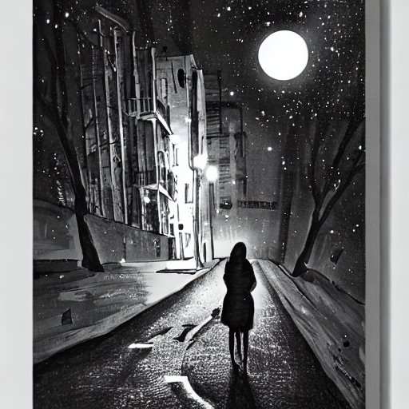

Do you see the swing in the playground rocking gently to and fro?
The little boot prints that encircle the slide's perimeter of January snow
Do you doubt your senses, are you losing your mind?
It's not what you think, it’s just the winter wind.
Do you see the swing in the playground rocking gently to and fro?
In the April eve, the breeze plays the tree’s leaves like a percussion player pro
Do you hear those music box chimes, sweet and delicate?
It's not what you think, you've just imagined it.
Do you see the swing in the playground rocking gently to and fro?
In the Autumn cool, sycamore seeds whirl towards the spot where new trees will one day grow
She sits holding iron chain with a gaze that stings like thorn of rosebush
whisper a prayer to your God, and then give her a push.
Blood and Doors
'
Crimson carpet and deco glass
Ascending steps and endless corridor
Perfume of pine and black narcissus
Nothing but blood and a hundred locked doors
Cardinal tears on jacket of hide
Red iron art imitates floral decor
Walls and windows, access denied
Nothing but blood and a thousand locked doors
Distant ping of elevator bell
You’ve seen these maze of walls before
Endless roaming through this banal hell
Nothing but blood and a million locked doors
Nothing but blood and one locked door
Nothing but blood and one locked door
Nothing but blood and one locked door
Quiet Tonight

The Street seems quiet tonight
leafy puddles are full-moon bright
Cats and foxes brave to explore
the rubbish bin's secret store
The street seems quiet tonight
drizzle dances in golden lamp-light
Green boxes, full of glass
and cardboard origami masterclass
The street seems quiet tonight
houses lit by cathode delight
the devil's car drops its fare
beneath the stoned angels glare
 '
'